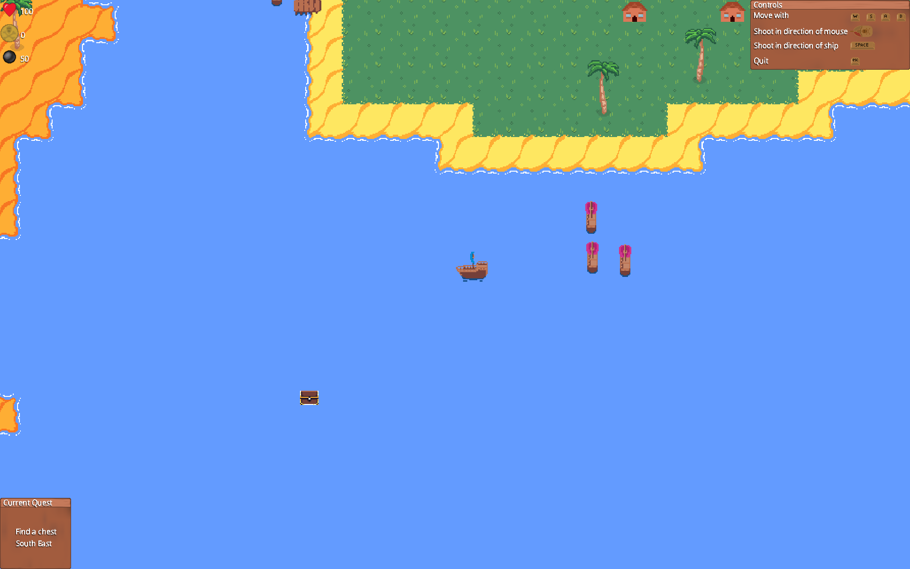

Game Info:
You control a ship sailing the Lake of York and are tasked with fulfilling certain quests along the way.
You use WASD keys to control the direction of the ship. The cannonball can be fired in the direction of the mouse with a left click, or in the direction of the ship with the spacebar.
Finding chests
You may need to follow directions in the prompt to sail around and find and collect a chest.
Destroying colleges

You may be tasked with destroying a given college. You will need to find the college by looking for its respective flag on an island and fire cannonballs to destroy every building on the island.